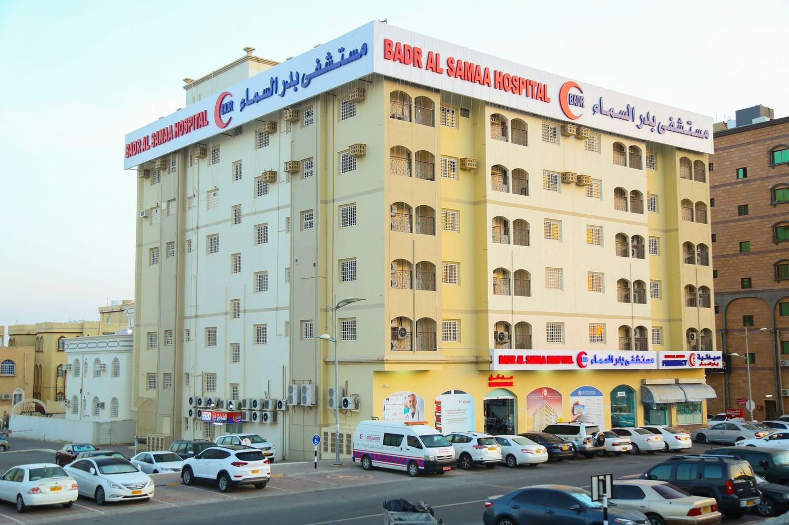
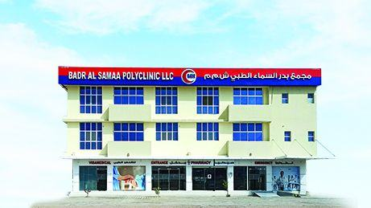
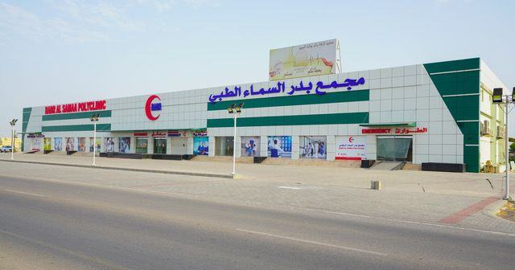
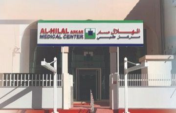

المواقع
ابحث عن فرع
مستشفيات ومراكز طبية وعيادات متعددة التخصصات في عُمان والبحرين والكويت والإمارات. تتضمن صفحة كل فرع العنوان والهاتف والتخصصات والاتجاهات.
منظر لروي-
 مستشفى24/701 · عُمان
مستشفى24/701 · عُمانروي
منظر لروي -
 مستشفى24/702 · عُمان
مستشفى24/702 · عُمانالخوض
منظر لمسقط -
 مستشفى24/703 · عُمان
مستشفى24/703 · عُمانبركاء
منظر لبركاء -

مستشفى24/704 · عُماننزوى
الصورة: مجموعة بدر السماء -
 مستشفى24/705 · عُمان
مستشفى24/705 · عُمانصلالة
منظر لمطار صلالة -
 مستشفى24/706 · عُمان
مستشفى24/706 · عُمانصحار
منظر لصحار -
 مركز طبي24/707 · عُمان
مركز طبي24/707 · عُمانالخوير
منظر لمسقط -
مركز طبي24/708 · عُمان
فلج القبائل
منظر لصحار -
 مركز طبي24/709 · عُمان
مركز طبي24/709 · عُمانصور
منظر لصور -

مركز طبيعُمان10 · عُمانالدقم
الصورة: مجموعة بدر السماء -

مجمع طبيعُمان11 · عُمانالسويق
الصورة: مجموعة بدر السماء -
 مركز طبي متميزعُمان12 · عُمان
مركز طبي متميزعُمان12 · عُمانالمعبيلة
منظر للمعبيلة -
 مستشفى الهلالالبحرين13 · البحرين
مستشفى الهلالالبحرين13 · البحرينالمحرق
منظر للمحرق -
 مركز الهلال الطبي24/714 · البحرين
مركز الهلال الطبي24/714 · البحرينالرفاع
منظر للرفاع -
 مركز الهلال الطبي24/715 · البحرين
مركز الهلال الطبي24/715 · البحرينالمنامة
منظر للمنامة -
 مركز الهلال الطبي24/716 · البحرين
مركز الهلال الطبي24/716 · البحرينسلماباد
منظر للبحرين -

مركز الهلال الطبيالبحرين17 · البحرينعسكر
الصورة: مجموعة بدر السماء -
 مركز طبي24/718 · الكويت
مركز طبي24/718 · الكويتالفروانية
منظر للكويت -
 مركز طبي24/719 · الإمارات
مركز طبي24/719 · الإماراتدبي
منظر لدبي
جارٍ تحميل الخريطة…
القائمة الكاملة
Every المواقع, with directions
- منظر لروي مستشفىعُمان
روي
مستشفى بدر السماء، ص.ب 443، الرمز البريدي 112
+968 2271 7171 - منظر لمسقط مستشفىعُمان
الخوض
مستشفى بدر السماء، ص.ب 1165، الرمز البريدي 121
+968 9144 2161 - منظر لبركاء مستشفىعُمان
بركاء
مستشفى بدر السماء، ص.ب 516، الرمز البريدي 320
+968 2688 4910 - الصورة: مجموعة بدر السماء مستشفىعُمان
نزوى
مستشفى بدر السماء، ص.ب 1116، الرمز البريدي 611
+968 2544 7776 - منظر لمطار صلالة مستشفىعُمان
صلالة
مستشفى بدر السماء، ص.ب 2344، الرمز البريدي 211
+968 2329 1830 - منظر لصحار مستشفىعُمان
صحار
- منظر لمسقط مركز طبيعُمان
الخوير
مركز بدر السماء الطبي، ص.ب 443، الرمز البريدي 112
+968 9967 6589 - منظر لصحار مركز طبيعُمان
فلج القبائل
مركز بدر السماء الطبي، ص.ب 598، الرمز البريدي 322
+968 2675 4131 - منظر لصور مركز طبيعُمان
صور
مركز بدر السماء الطبي، ص.ب 293، الرمز البريدي 411
+968 2554 6112 - الصورة: مجموعة بدر السماء مركز طبيعُمان
الدقم
مجمع بدر السماء الطبي، المجمع / البلوك: 51، قطعة رقم 106، المنطقة الاقتصادية الخاصة، الدقم، الوسطى، عُمان
+968 2282 6435 - الصورة: مجموعة بدر السماء مجمع طبيعُمان
السويق
السويق، سلطنة عُمان
+968 7170 4333 - منظر للمعبيلة مركز طبي متميزعُمان
المعبيلة
مركز بدر السماء الطبي المتميز، الرمز البريدي 121، ص.ب 1269، شارع الخير
+968 2282 6381 - منظر للمحرق مستشفى الهلالالبحرين
المحرق
مستشفى الهلال، طريق رقم 1129، المحرق، 23622
+973 1734 4700 - منظر للرفاع مركز الهلال الطبيالبحرين
الرفاع
مركز الهلال الطبي، طريق 313، مجمع 903، مبنى 640، شارع الشيخ خالد
+973 1749 5555 - منظر للمنامة مركز الهلال الطبيالبحرين
المنامة
مركز الهلال الطبي، طريق رقم 2704
+973 1782 4444 - منظر للبحرين مركز الهلال الطبيالبحرين
سلماباد
مركز الهلال الطبي
+973 3401 2345 - الصورة: مجموعة بدر السماء مركز الهلال الطبيالبحرين
عسكر
3JJG+MG سترة،
+973 1617 1122 - منظر للكويت مركز طبيالكويت
الفروانية
مركز بدر السماء الطبي، الفروانية، قطعة 4، شارع 39، بالقرب من حديقة الفروانية
+965 2475 9250 - منظر لدبي مركز طبيالإمارات
دبي
مركز بدر السماء الطبي، ص.ب: 125035، بالقرب من محطة مترو الفهيدي (المخرج رقم 1)، مقابل برج المصلى
+971 4357 8681
لا توجد مواقع تطابق هذا الاختيار.
احجز موعدك